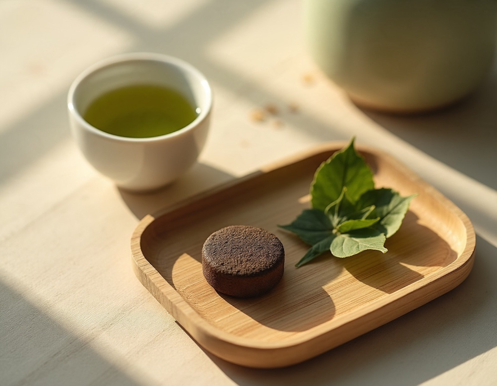

카페인 함유 · 오후 활력
활력공진단
공진단 기본 처방에 녹차, 지각, 산화질소(소량)를 더한 환제입니다. 녹차가 들어 있어 카페인이 함유되어 있습니다.
구성
공진단 기본 처방(녹용 포함) + 녹차, 지각, 산화질소(소량)
특징
- 경옥고처럼 5일간 고아서 만든 고(膏) 형태로, 식감이 촉촉하고 쫄깃합니다.
- 1환은 5.5g이며, 녹용은 뉴질랜드산 분골을 사용합니다.
- 녹차 성분이 들어 있어 카페인에 민감하시면 해울공진단을 권합니다.
이런 분께 상담을 권합니다
- 커피를 마셔도 잠을 잘 주무시는 편인 분
- 오후에 나른하고 처지는 느낌이 있는 직장인·수험생
- 운동이나 골프 전후로 기력 관리가 필요한 분